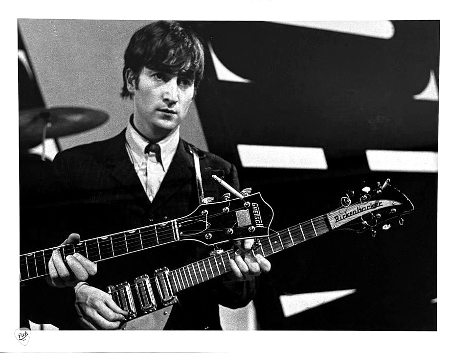
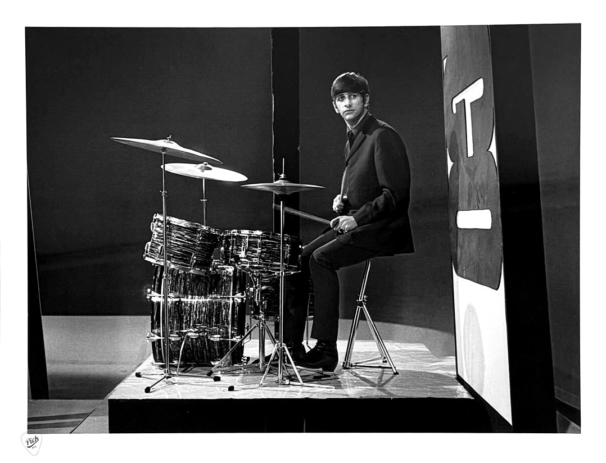
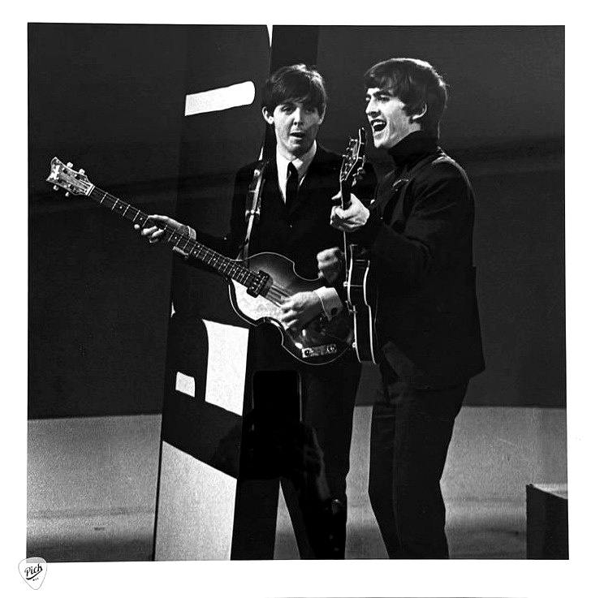
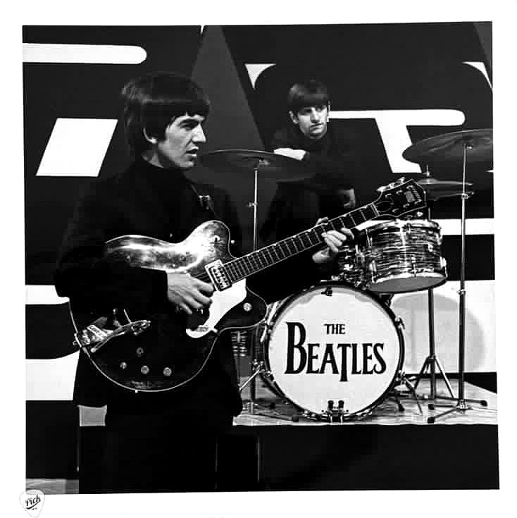
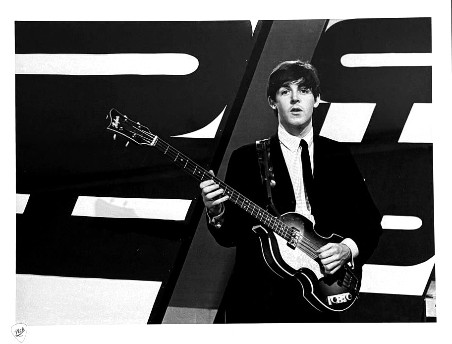

The photographs
One song. Seven frames.

One song. Seven frames.
One hundred prints of each.
Everything below was shot during She Loves You — the closing minutes of the night Beatlemania was born. When the hundredth print of each frame is gone, it is never printed again.
The Beatles
December 1963. Birmingham. The night four young
men became the Fab Four.
Edition A-100 · 51 remain · £149

John Lennon
Britain had heard him. America was about to.
Edition A-100 · 58 remain · £149
Paul McCartney
The smile before America surrendered.
Edition A-100 · 55 remain · £149

Ringo Starr
The beat behind the song Britain could not
stop singing.
Edition A-100 · 64 remain · £149

Paul & George
Before the screams, there was a Liverpool
school bus.
Edition A-100 · 61 remain · £149

George & Ringo
George was the youngest. Ringo was the final
piece.
Edition A-100 · 64 remain · £149

Paul McCartney — portrait
One frame from the night She Loves You closed
the show.
Edition A-100 · 55 remain · £149